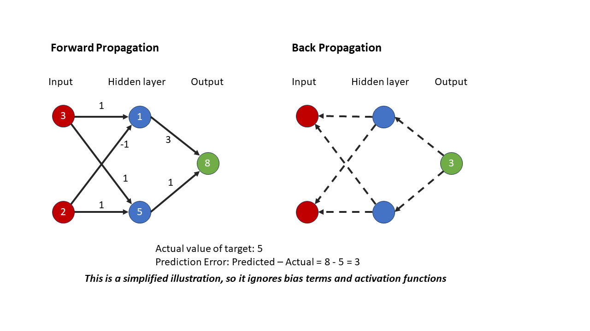

MOUSE-WRITTEN NUMBER RECOGNITION USING KNN, NEURAL NETWORK, CONVOLUTIONAL NEURAL NETWORK
Source code
Demonstration in a GIF format:

Introduction
In the ever-evolving realm of AI, remarkable progress and advancements have been made, which are exemplified by the emergence of OpenAI ChatGPT models in 2023. Motivated by the rapid growth of AI and fuelled by my curiosity, I started my first AI project, creating a number recognition system that can predict mouse-written digits.
Through my Python courses, I have acquired basic knowledge of K-Nearest Neighbours (KNN) and Neural Network (NN), which motivated me to dive deeper into the realm of deep learning. During this summer holiday, I took the challenge to self-learn how the cutting-edge Convolutional Neural Network (CNN) works and make a CNN model of my own. To find out which model was better, I conducted a comprehensive comparison of all three models in this project. This involved the meticulous process of coding and algorithmic exploration to ensure the reliability and precision of the model.
To make it fun and interactive, I developed an interactive tool using Pygame, allowing me to actively engage with my model using a mouse. I think this interactive framework of combining user interface and AI model can be extended to solve other real life image recognition problems in the future.
Data
In the initial stages, I chose to leverage my previous experience with the MNIST dataset (link). Although the MNIST dataset is commonly used to test AI models in handwriting recognition, many people found this dataset is too simple for most machine learning algorithms. Similar in my case, my KNN model can easily achieve 97.1% accuracy testing on the MNIST dataset, NN model can achieve 97.8%, and CNN can achieve 99.2%. The main reason of such a success is due to the huge data size of 70k images.
However, there is a problem. These AI models trained on MNIST handwritten images find it hard to recognize my mouse-written digits when doing real-life testing. It is not only hard to write nicely on-screen using mouse, but also more importantly, the mouse-written digits often have gaps in them when you write quickly. To solve this issue, I decided to use a mouse-written dataset consisting of 1447 images to train my model. Image samples are as below:
However, the change to a more suitable dataset came at a cost. The dataset only had 1447 images; a huge disadvantage compared to the 70,000 images in MNIST dataset. Since the model had less data to train on, I expect my models would achieve lower accuracies than tested on the MNIST dataset. The less amount of training data, the less accuracy AI model can achieve and therefore more challenging to the task of classification. In real life scenarios, we often struggle with getting enough training data for the model to train on.
Models
I utilized three kinds of machine learning methods, namely K-Nearest Neighbours (KNN), Neural Network (NN), and Convolutional Neural Network (CNN), to analyse and compare their performance in recognizing mouse-written digits.
KNN
K-Nearest Neighbour is a simple algorithm, as it classifies new cases based on the classes of their close neighbours. To illustrate, I made a simple graph below to show how an unknown case is classified by KNN (with nearest neighbour of 3) using majority votes.
NN
A neural network (NN) is like a team of neurons that work together to solve problems. They pass messages to each other to form connections in forward direction and make predictions (this is called forward propagation). Then, they learn from prediction errors and update neurons and connections backwards to improve the network (this is called back propagation). It helps computers recognize patterns in things like images or numbers.
To illustrate, I made a graph below to show a simplified illustration of how NN performs forward propagation and backpropagation.
CNN
Convolutional Neural Network (CNN) is the cutting-edge deep neural network that extracts and distinguishes specific features within pictures, such as low-level feature of edges and high-level feature of shapes. CNNs can figure out what objects or patterns are in images, which can even help self-driving cars recognize traffic signs!
To illustrate the idea of convolution, I made a graph below to show how convolution filter can extract the feature of vertical edges from an image of T-shirt in the Fashion-MNIST dataset.
As illustrated as below, deep learning neural network, like CNN, is better than traditional neural networks in two ways:
- CNN can use convolutional filters to extract more meaningful features from images.
- CNN can accommodate much more layers of neurons.
To ensure a fair test, I divided the dataset into a training set (70%) and a testing set (30%). Then, I measured the accuracy of the three abovementioned models using the same testing set.
Results
K-Nearest Neighbors (KNN) achieved the accuracy of 81.61 - 85.52% on the testing set using different numbers of neighbours. Comparing with testing on the MNIST dataset of 70k images, the KNN accuracy dropped from 97.1% to 85.5% using 1447 images.
model training for num_neighbors: 1 ...
num_neighbors: 1, accuracy: 85.52%
model training for num_neighbors: 3 ...
num_neighbors: 3, accuracy: 84.37%
model training for num_neighbors: 5 ...
num_neighbors: 5, accuracy: 83.22%
model training for num_neighbors: 7 ...
num_neighbors: 7, accuracy: 82.76%
model training for num_neighbors: 9 ...
num_neighbors: 9, accuracy: 81.61%
The Neural Network model attained the accuracy of 81.15% - 85.75% on the same testing set using one hidden layer and different numbers of neurons. I also tested multiple hidden layers but with very little improvement. Comparing with testing on the MNIST dataset, the accuracy of NN model dropped from 97.8% to 85.8% using 1447 images.
model training for number_of_neurons_i: 100 ...
number_of_neurons_i: 100, accuracy: 81.15%
model training for number_of_neurons_i: 300 ...
number_of_neurons_i: 300, accuracy: 83.68%
model training for number_of_neurons_i: 500 ...
number_of_neurons_i: 500, accuracy: 82.99%
model training for number_of_neurons_i: 700 ...
number_of_neurons_i: 700, accuracy: 85.52%
model training for number_of_neurons_i: 900 ...
number_of_neurons_i: 900, accuracy: 83.91%
model training for number_of_neurons_i: 1100 ...
number_of_neurons_i: 1100, accuracy: 85.06%
model training for number_of_neurons_i: 1300 ...
number_of_neurons_i: 1300, accuracy: 85.75%
model training for number_of_neurons_i: 1500 ...
number_of_neurons_i: 1500, accuracy: 83.91%
The CNN model significantly improved the accuracy on the same testing set. For examples, using CNN with two convolution layers, I can improve the accuracy to 90.34%.
On testing dataset:
loss: 0.4519, - accuracy: 0.9034
When using CNN with four convolutional layers, I can further achieve 98.62% accuracy without too much playing around with model parameters. Comparing with testing on the MNIST dataset, the accuracy of CNN model slightly dropped from 99.2% to 98.6% using 1447 images. It illustrates the power of deep neural network – CNN even in this challenging setup.
On testing dataset:
loss: 0.0680, - accuracy: 0.9862
The summary of my CNN model with four convolutional layers is shown as below:
The learning progress is shown as below:
Furthermore, I can still improve the model through some degree of hyperparameter tuning. For example, by adding more layers or changing the filter sizes in the convolutional layers, I reached an astounding 99.34% accuracy on the test set! That is 0.14% better than using MNIST dataset! Despite having way less data to train on, which to models is an immense disadvantage, it still achieves very high accuracy. This proves that although hyperparameter tuning might be a bit tedious, it still pays off at the end.
On testing dataset:
loss: 0.0360, - accuracy: 0.9931
REAL LIFE TEST AND DISCUSSION
After I compared the results, it became evident that traditional machine learning models, KNN and NN, achieved similar levels of accuracy on the testing dataset. With the help of convolution filters and deep neural network, CNN can achieve much better at image recognition. This explains why deep learning has achieved so much success in the recent years.
To assess their performance in real-life scenarios, I decided to go a step further. I deployed all the three models using a Pygame GUI and actively interacted with them, particularly testing them on my messy and challenging mouse-written samples.
Based on my live experience of playing with my tool, the CNN model exhibited superior capabilities in effectively handling these difficult mouse-written samples. The model proved to be more adept at accurately recognizing and interpreting the messy mouse-written numbers. To illustrate the model and Pygame GUI, I have prepared animations and videos on my website (see the bottom of this page) that demonstrate how the tool handles both normal and messy mouse writing numbers, providing visual illustrations of its functionality.
I also included a few static images of messy mouse-written numbers in this PDF file as below:
To gain a better understanding of the models' performance, I have shared the codes and models (the .pkl files) on my GitHub repository (source codes). I invite you to explore and experiment with them. You can find the readme file on how to deploy and use this tool here (readme). I hope you find them as fascinating as I do.
To this end, these fascinating results stimulate me to explore more advanced deep learning algorithms and more challenging applications in real life.
Demonstration in a GIF format:
Demonstration in a MP4 format: